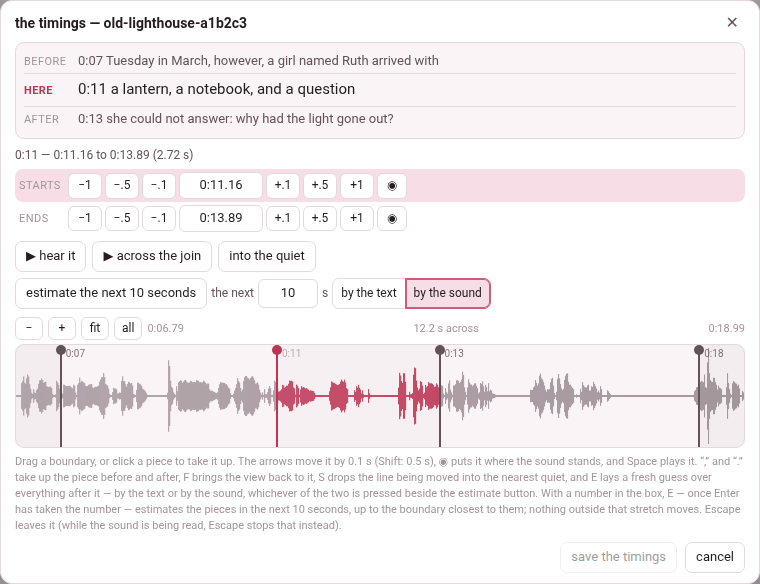

The timings: moving a caption’s start
the timings, in the player’s bar beside video info, moves where each caption starts — and nothing else — on a video that is already on the shelf. The transcript editor of the add page does this before a video is added; this is the one door that does it afterwards.
1. Why only the start#
A caption’s text must equal its line of transcript.txt, and the checker holds the video’s two files to each other: the same number of captions, each caption’s start within half a second of its line’s, the same words, the same chapters. An editor that could rewrite what a caption says would leave that check passing over something it had never seen.
A start is not one of those things. Move it in both files by the same amount, and every rule is exactly as true afterwards as before: the count did not change, the two starts still agree, no word was touched. So this door moves starts, and moves them everywhere a start is written, all together or not at all:
annotations.json, what the player draws;transcript.txt, what the annotations are checked against;- the notes anchored to the caption, under
markdown/; - the batches under
parts/, on a video added beforeparts/was retired.
It runs the checker before and after, and refuses whatever its own move would break, in the checker’s words.
The notes move with it. A note names its caption by that caption’s start, so a start that moved without it left the note pointing at nothing — it kept the old number and was shown adrift at the end of the transcript. The move carries them now: the anchor: line of every note anchored to a caption that moved is written with its new start, in the same breath as the two files.
2. The sheet#

The button opens a sheet, the timings — and the video’s id, over the player. From the top:
- before, here, after — the caption being timed and its two neighbours, with their times, so you can see what you are placing;
- a line saying which caption it is, and from when to when it runs;
- starts — the caption’s start: −1 −.5 −.1, the time itself (type one and press Enter), +.1 +.5 +1, and ◉, which puts it where the sound stands now;
- ends — the same row for where it ends. A caption runs until the next one begins, so its end is the next caption’s start, and moving it moves the next caption;
- ▶ hear it — the caption, from its start to where the next begins; ▶ across the join — the second before its boundary and the second after, to hear whether the line falls in the right place; into the quiet, and estimate the rest with its switch, by the text or by the sound, and a box for the next few seconds (below);
- the strip: the picture of the sound, a tinted band for each caption, a line at every boundary, and the playhead. Drag a line; click a band to take that caption up. − and + zoom out and in, fit returns to the caption and its neighbours, all shows the whole video; the wheel scrolls along it, and the wheel with Shift or Ctrl zooms.
Nothing is written until save the timings — which counts what you moved, save the timings (3) — and cancel, ✕ or Esc leave without saving. When it is saved the sheet closes, the player says 3 captions moved, and the transcript is redrawn at the new times without a reload.
The keys#
| Key | Does |
|---|---|
| ← → (↓ ↑) | move the line being timed by 0.1 s; with Shift, 0.5 s |
| Space | play the caption, or stop |
, and . (also < >, [ ], PageUp and PageDown) | take up the caption before, or after |
| F | bring the view back onto the caption being timed |
| S | into the quiet: move the line to the middle of the nearest stretch where the sound falls away |
| E | estimate the rest: a fresh guess over every caption after this line — by the text or by the sound, whichever is pressed; with seconds in the box beside the button, only the next stretch of that length |
| Enter | save (in a time box: take the time typed) |
| Esc | leave without saving |
The comma and the full stop lead because they are unshifted on every keyboard, where the brackets hide behind AltGr on an Italian or a French one. The letter keys, the comma and the full stop, the brackets and the page keys do nothing with Ctrl, Alt or ⌘ held, so Ctrl+F and the rest stay the browser’s; the arrows, Space, Enter and Esc answer whatever else is held.
into the quiet does what the eye has already done: a boundary belongs in the silence between two words, and the eye finds that gap on the strip long before the hand can drag onto the middle of it. It looks either side of the line for the nearest stretch where the sound drops away — how far it looks depends on how far you are zoomed in — and puts the line in the middle of it. With no picture of the sound it is greyed out: there is no picture of the sound here to find the quiet in.
Estimate the rest: by the text or by the sound#
estimate the rest is for the middle of a long job: a hand works left to right, and by the time the tenth boundary is right the fortieth is still where a first guess put it. It lays the guess again over everything after the line in hand, and touches nothing before it. Beside it sit two buttons that work as a switch, by the text and by the sound: the one pressed is how the button, and E, make the guess.
by the text is the guess it has always made: each caption given a slice of what is left in proportion to how much text it has. It needs no picture of the sound, and it hears nothing.
by the sound lays the captions through the picture of the sound. A caption’s start goes into the pause before its first word, just before the voice comes back, where the length of the text allows one there; between the pauses the text is shared out at the pace of the speech, followed as it changes. It hears where the voice stops and starts, and never which word is which: nothing recognises speech. So it is a better first guess, not an alignment — play the boundaries and correct what is off. A caption cut in the middle of a sentence has no pause to sit in, and its start is the likeliest to need your ear.
When it is done it says how many boundaries it could put in a pause: 30 pieces after this estimated from the sound — 24 of the 29 boundaries sit in a pause it heard; nothing to the left of it moved. The caption at the line keeps its start, and nothing is written until save the timings: cancel leaves without the guess — and without everything else moved since the sheet was opened.
Captions with no punctuation — auto-captions as YouTube leaves them, which it does for Persian and Arabic — are its weakest case: with no sentence ends to hold on to, a long stretch can drift by a second or two, and in a short Chinese stretch by the text can do better. Captions put into sentences by ✨ tidy up when the video was added carry their full stops, and fare as well as any.
It reads the rest of the video, from the line to its end, so the time depends on how much is left: a few seconds for an hour, up to about a minute for four hours, more on a computer busy with something else. Meanwhile the sheet says estimating from the sound… — or, over a stretch that stops short of the end, estimating the next 28.6 s from the sound… — and holds its lines still, and the work is on the Working… list — Estimating a video’s timings by the sound — where the hub and any other page see it. While it waits, estimate the rest reads stop estimating: it, or Esc, gives the wait up, and everything you moved by hand stays — as on a book’s sheet, where the rest is said too: one estimate at a time, and a deadline of a few minutes (Fixing the timings).
It needs a picture of the sound, and without one it is greyed, its tooltip saying why:
- A film on this machine.
- The server reads the film itself with ffmpeg, as it does for the strip. Only on a computer without ffmpeg is there none: there is no picture of the sound here to estimate by — it is drawn by ffmpeg, on the computer Parseh runs on.
- A YouTube video.
- Its only picture is the one ● draw the sound records (below) — twenty numbers a second, against a film’s hundred, and nearly as good for this. Until it has been drawn: draw the sound first (“● draw the sound”, above the picture): there is no picture of it here yet to estimate by. In a browser that cannot draw it, it says so, and why: there is no picture of the sound here to estimate by, and it cannot be drawn in this browser: …. Captions after the end of what was drawn are refused when E is pressed: the picture of this video’s sound ends before this stretch begins, so it cannot be estimated by the sound: estimate it by the text.
While it is greyed, by the text shows pressed and E goes by the text. Your choice is kept all the same: draw the sound, and by the sound is back in force at once. The choice is remembered in this browser, for videos and books alike (Fixing the timings).
Only the next few seconds#
The guess over everything after the line is often more than the next stretch of work needs. Beside estimate the rest, between it and the switch, a small box reads the next [ ] s. Type a number of seconds in it — 90, or 1:30 — and the button reads estimate the next 90 seconds (estimate the next 1 second, for one): the same act, by the text or by the sound as the switch says, over a shorter stretch. E runs whatever the button reads.
- Which captions.
- From the line in hand, the stretch runs to the caption start closest to that many seconds after it — a start that is already there — or to the end of the video, when that is the closest. Closest means on either side, so 90 seconds may end a little before the ninetieth second or a little after it, and a tie goes to the shorter stretch. It always holds at least one caption, so a number shorter than the first still estimates that one; and when the closest start is the end of the video — the number reaches it, or is nearer to it than to the last caption’s start — it is exactly estimate the rest, which the status says. The button’s tooltip says how many captions the number makes of it today, how many seconds and up to when — worth reading when the captions are long, because the rounding can land well away from the number you typed.
- What does not move.
- Nothing before the line, as ever — and nothing from the start the stretch ends at on: that caption keeps its start, and so does every one after it. The last caption of the stretch runs until that start, as the last caption of the rest runs until the end of the video.
- What it says.
- The status names the stretch as it was laid, with the real number of seconds after the rounding: 5 pieces in the next 28.6 s (to 3:41.20) estimated from the sound — 3 of the 4 boundaries sit in a pause it heard; nothing outside that stretch moved.
- A shorter wait.
- Only the sound of the stretch is read — or, for a YouTube video, only the stretch of the picture you recorded is sent — so by the sound takes time in proportion to the stretch, and not to everything that is left.
- Empty is the rest.
- The box starts empty on every sheet and is not remembered: how far to estimate is decided each time, for the stretch in front of you; the switch is the habit that is remembered. Seconds are typed as 90, 1.5 or 1:30. Anything else — letters, a minus sign — turns the box red, and pressing the button or E is refused in words: the box must hold seconds (90 or 1:30) or be empty; nothing was estimated. So is 0, or a number so small that it rounds to nothing, with the seconds in the box must be above zero, or the box empty; nothing was estimated. It never guesses what was meant.
- While you type.
- The keys are the box’s while it has the focus: a full stop or a comma typed in it does not step to the next caption. Enter takes the number and gives the sheet its keys back; it does not estimate — press E or the button for that.
3. The picture of the sound#
A film on this machine has one for nothing: the server reads the film itself with ffmpeg, window by window, at whatever detail the view needs — exactly as it does a book’s narration.
A YouTube video has no file any script here can read, so it has no picture of its sound unless you ask for one. ● draw the sound, beside the zoom buttons, plays the video once, from beginning to end, while recording this tab, and keeps the shape of what it heard — twenty numbers a second — in waveform.json beside the video. It is done once: every later visit draws it, and it travels in the video’s download.
- It takes as long as the video does, and the button says so before you press it.
- It needs Chrome or Edge on a computer, reached at Parseh’s own https address; anywhere else the button is greyed, and its tooltip says why. The first time, the browser asks to share the tab: press Allow and leave Also allow tab audio on.
- While it listens it says listening… 42%, and the video plays at normal speed. The sound itself is never kept, and never needs to be: the player can play any second of the video on its own.
- What can go wrong, it says: the share came without its sound — share this tab again and leave “Also allow tab audio” turned on; nothing was heard — the tab was shared without its sound, or the video is muted; the tab stopped being shared while the sound was being drawn.
Without a picture the sheet still works: the steps, the typed times, ◉ and ▶ move a caption perfectly well by ear. Only into the quiet and by the sound need one. The button’s tooltip in the bar says when there is no waveform, and why.
4. What it refuses#
| It says | Which means |
|---|---|
| that would put caption 3 at 11.5, before caption 2 at 12: a caption cannot start before the one in front of it | starts never go backwards (two captions may start at the same moment) |
| caption 3 starts at 12.5, not at 12: the video has been written by another hand since this was opened – reload it and move it again | the page is out of date |
| transcript.txt carries 7 captions and annotations.json 6: mend that before moving any of them | the two files already disagree; the checker says how |
| that would break the video: … | the move brings in an error the checker would refuse, in its words |
| this video has no captions to time | there is nothing to move (the button is greyed out) |
| the player has not loaded yet | the video itself has not loaded — a YouTube video with no internet, a film whose file is gone or that this browser cannot play. The button looks ready, but the timings need the video: they play it, and read where it stands |
transcript.txt is written back in the plainest form of a pasted panel: a fraction only where a start has one (0:12.5), a chapter marker as Chapter 1: …, and no spoken-duration lines.